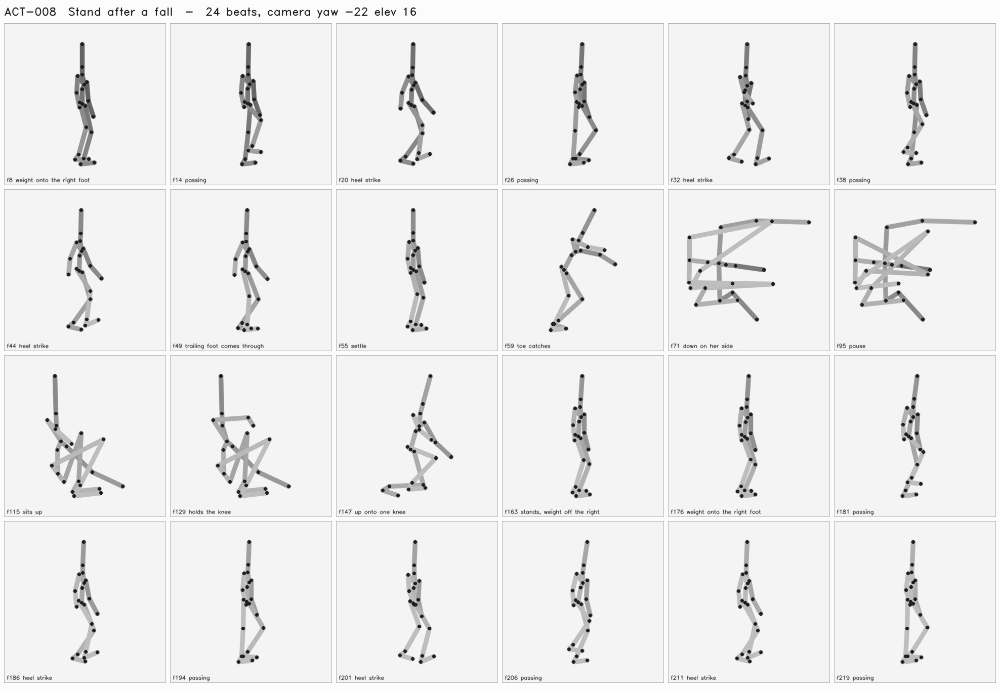

Fall sideways, pause, assess pain, get up and continue.
Passes when: Ground contacts remain coherent; injury affects the next action.
| frame | who | beat |
|---|---|---|
| 8 | Bola | weight onto the right foot |
| 14 | Bola | passing |
| 20 | Bola | heel strike |
| 26 | Bola | passing |
| 32 | Bola | heel strike |
| 38 | Bola | passing |
| 44 | Bola | heel strike |
| 49 | Bola | trailing foot comes through |
| 55 | Bola | settle |
| 59 | Bola | toe catches |
| 71 | Bola | down on her side |
| 95 | Bola | pause |
| 115 | Bola | sits up |
| 129 | Bola | holds the knee |
| 147 | Bola | up onto one knee |
| 163 | Bola | stands, weight off the right |
| 176 | Bola | weight onto the right foot |
| 181 | Bola | passing |
| 186 | Bola | heel strike |
| 194 | Bola | passing |
| 201 | Bola | heel strike |
| 206 | Bola | passing |
| 211 | Bola | heel strike |
| 219 | Bola | passing |
| 226 | Bola | heel strike |
| 231 | Bola | passing |
| 236 | Bola | heel strike |
| 244 | Bola | passing |
| 251 | Bola | heel strike |
| 258 | Bola | trailing foot comes through |
| 265 | Bola | settle |

Thresholds come from the spec's crash_lab_checks and are read by the verdict, not restated beside it. A check that did not run says so; a blank is not a pass.
tight space · different body proportions